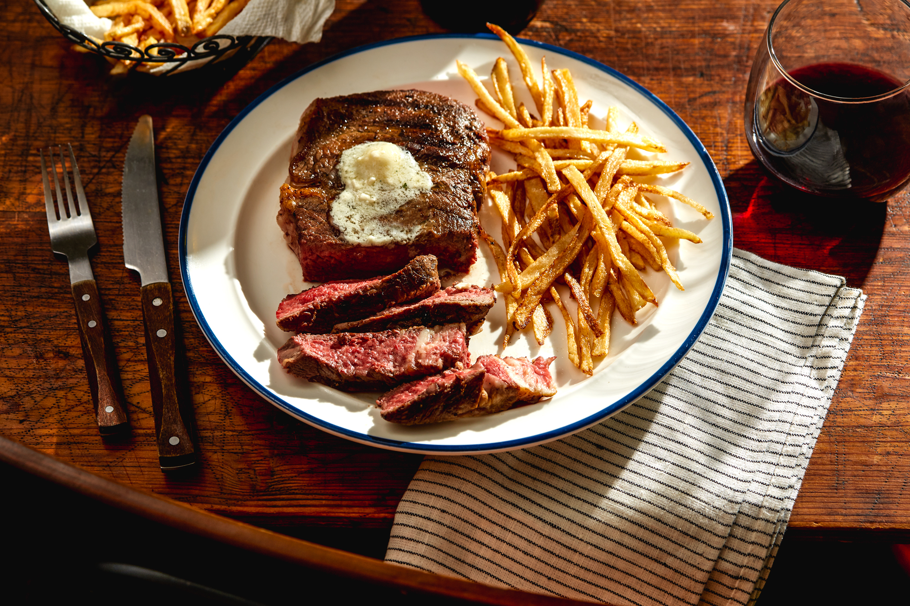

Steak frites

Frites: crunchy exterior, soft interior side that go well will steak
Steak Frites Recipe with lemon herb butter is a classic French dish that is absolutely delicious and incredibly easy to make.
This recipe comes together in under 45 minutes and is fantastic to serve up to family or guests at an entertaining event. It’s something you may see in a restaurant, however, if you make this you may never eat it again because it’s just that delicious.
Ingredients
- 3 softened unsalted sticks of butter
- 1 tablespoon minced fresh rosemary
- 2 tablespoons minced fresh thyme
- 1/4 cup sliced green onions
- 2 finely minced cloves of garlic
- zest and juice of 1 lemon
- 2 teaspoons sea salt
- 1/2 teaspoon pepper
- 3 russet potatoes cut into batonnet slices
Steps
- Butter: Add the butter to a stand mixer with the paddle attachment and whip on high speed until light and fluffy, about 5-7 minutes
- Next, add in the rosemary, thyme, green onions, garlic, lemon zest, lemon juice, salt, and pepper until combined. Set aside.
- Fries: Add the fries to a container of cold water and move around with your hands to get some of the starch off.
- Drain and rinse the potatoes again and drain off any excess water.
- Place them in a deep fryer or a pot of oil at 300° for 3 minutes
- When ready to serve turn the heat to 350° and cook for 3-5 more minutes. Toss with salt in a bowl and serve.